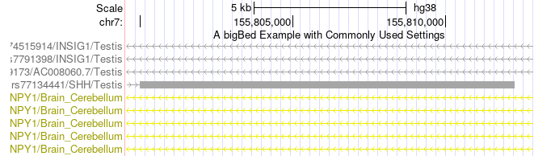

Track Hubs are web-accessible directories of genomic data that can be viewed on the UCSC Genome Browser. They allow you to display a set of custom annotations on an assembly (or assemblies) of your choice and offer several advantages over custom tracks, including more display configuration options, more track organization options, more control over your data, and easier updates to that data.
This page covers the basics of setting up your own hub:
As you build your hub, use the "Hub Development" tab on the Track Data Hub page to check your hub for errors or to disable file caching to see your changes immediately rather than after the 300ms refresh rate.
To begin, we want to provide an example hub.txt that has been created in a way to make it easy to swap in your data URLs in place of our examples. It indicates what settings are required and includes many optional settings that can help elevate your tracks beyond the basics. Alongside these settings, it includes short explanations of how those settings work and how to configure them, but there is also a version provided without these.
The first step in creating a track hub is to create your hub.txt file. Download the example hub.txt and use this as a starting point, changing our default values to those for your hub. But, we'll also provide the necessary settings here. These settings control how your hub is labeled in the interface and contact information:
hub myExampleHub # a short, unique identifier for your hub, no spaces
shortLabel Example Hub
longLabel Example Hub for useOneFile option
useOneFile on
email genome-www@soe.ucsc.edu
genome hg38
If you have tracks across multiple assemblies, see the full track hub documentation.
The most common track types are bigBed and bigWig, compressed, binary versions of corresponding plain-text formats. Together they should cover much of what you might want to display in the Genome Browser, from transcription peaks to RNA-seq results.
You can use bigBed tracks to display discrete annotations, such as genes, transcription start sites, or conserved genomic elements. The bigBed format builds off the plain-text BED format and is thus flexible in terms of what fields are included. Your file must start with a set of 12 standard fields (though not necessarily all of them), but can also extend the format with any number of additional fields.
Next, we'll discuss how to build a bigBed from a bed file.
bedToBigBed utility for your system type from
our download
server.
bedToBigBed to build your bigBed:
bedToBigBed -sort in.bed chrom.sizes myBigBed.bbbigDataUrl setting in your hub.txt
Once you have built your bigBed files, it is time to create a stanza in your hub.txt file for that track. Here is what the required settings discussed above might look like for a basic bigBed track:
track bigBedRequiredSettings
shortLabel bigBed Required Settings
longLabel A bigBed Example with Required Settings
visibility pack
type bigBed 12 +
bigDataUrl gtexCaviar.chr7_155799529-155812871.bb
The type line consists of three parts:
Here is a screenshot of what this basic bigBed track looks like displayed in the Genome Browser:
The bigBed format also offer a wide range of customization options for the display, from decorators to highlights. Additionally, they offer extensive filter controls, searching options, and mouseover configurations. Our trackDb documentation contains a full listing of settings available for the format.
Here is the bigBed configuration with some commonly used settings, including filtering and mouseover configuration.
track bigBedCommonSettings
shortLabel bigBed Common Settings
longLabel A bigBed Example with Commonly Used Settings
visibility pack
type bigBed 12 +
bigDataUrl gtexCaviar.chr7_155799529-155812871.bb
filterLabel.cpp CPP (Causal Posterior Probability)
filter.cpp 0
filterLabel.geneName Gene Symbol
filterText.geneName *
mouseOver $name; CPP: $cpp
And here is what that track looks like in the Genome Browser:

These common settings added options to the track configuration pop-up:
You can use bigWig to tracks to display continuous annotations, such as RNA-seq expression, conservation scores, or other genome-wide scores. You can build a bigWig using one of two plain-text formats: wiggle or bedGraph.
Next, we'll discuss how to build a bigWig from a wig or bedGraph file.
wigToBigWig utility for your system type from our download server.
wigToBigWig in.bedGraph chrom.sizes myBigWig.bwbigDataUrl setting
The basic trackDb configuration for a bigWig track is similar to a bigBed track as
all tracks required the same basic settings (track, shortLabel, longLabel, type, bigDataUrl).
This is what the configuration for a bigWig track might look like (the example
hub.txt includes other useful settings):
track bigWigExample
shortLabel bigWig Example
longLabel A bigWig Example with Commonly Used Settings
visibility pack
type bigWig -20 10.003
bigDataUrl hg38.phyloP100way.chr7_155799529-155812871.bw
color 60,60,140
The type line consists of two parts:
Here is what this looks like visualized in the Genome Browser:
Next, we'll provide a basic overview of how to group your tracks using composite tracks and super tracks. This will allow you to pull similar data together under a single track.
Composite tracks can hold multiple tracks of the same type. For example, you use a composite to group together a set of RNA-seq experiments including replicates.
Here's what the configuration might look like for a composite containing two bigWig tracks. There are two key components of a composite: (1) the line "compositeTrack on" in the parent track stanza, and (2) including "parent compositeName" for each track that will be part of the composite.
track compositeExample
shortLabel Example Composite Track
longLabel Example composite track using bigWigs
visibility dense
type bigWig
compositeTrack on
track compositeBigWig1
bigDataUrl a.chr7_155799529-155812871.bw
shortLabel bigWig #1
longLabel bigWig in Composite Track Example #1
parent compositeExample
type bigWig 0 1
color 255,0,0
autoScale group
visibility dense
track compositeBigWig2
bigDataUrl c.chr7_155799529-155812871.bw
shortLabel bigWig #2
longLabel bigWig in Composite Track Example #2
parent compositeExample
type bigWig 0 1
color 0,255,0
autoScale group
visibility dense
This composite track configuration will display like so:
Super tracks are a more general type of container. They can contain tracks of different types and even composites.
Configuring a basic super track is quite similar to composite tracks. There are two key components of a composite: (1) the line "superTrack on" in the parent track stanza, and (2) including "parent superTrackName" for each track that will be part of the super track.
track superTrackExample
shortLabel Super Track Example
longLabel A super-track of related data of various types together: individual, multiWig, and composite
superTrack on show
html examplePage
track superTrackbigBed
parent superTrackExample
bigDataUrl gtexCaviar.chr7_155799529-155812871.bb
shortLabel ST bigBed example
longLabel A super-track-contained bigBed
type bigBed 12 +
visibility squish
priority 30
track superTrackCompositeBigWig
parent superTrackExample
compositeTrack on
shortLabel ST Composite bigWig
longLabel A composite track in a super track grouping bigWigs
visibility dense
type bigWig
priority 60
track superTrackCompositeBigWig1
bigDataUrl a.chr7_155799529-155812871.bw
shortLabel ST bigWig composite #1
longLabel A composite-contained bigWig in a super track example #1
parent superTrackCompositeBigWig on
type bigWig 0 1
track superTrackCompositeBigWig2
bigDataUrl c.chr7_155799529-155812871.bw
shortLabel ST bigWig composite #2
longLabel A composite-contained bigWig in a super track example #2
parent superTrackCompositeBigWig on
type bigWig 0 1
Loading the example hub with this super track onfiguration looks like this:
If you plan to share your track hub more widely, you will want to create a description page for your tracks. A description page could contain a short description of what the data represents, how the data was generated, a link to the associated paper, or a contact email for questions regarding the data.
We provide an example description html that you can modify with
the details for your track. Once you've modified this example html for your
track add an html to the corresponding track stanza:
track bigWigExample
shortLabel bigWig Example
longLabel A bigWig Example with Commonly Used Settings
type bigWig -20 10.003
bigDataUrl hg38.phyloP100way.chr7_155799529-155812871.bw
html bigWigDescription.html
Once you have a functional hub that you would like to share with others, you can create links that you give to others in two ways.
The first option is to create a session link, which requires a Genome Browser account. Load your hub, configure the genome browser as you'd like (e.g. position and data tracks), select "My Sessions" under "My Data", and use the option to save the current settings as a session. You will then be provided with a URL that you can share with others.
The other option is to create a URL to the Genome Browser that loads your hub on the assembly of interest. There are three URL parameters you will want to use:
db - UCSC assembly name (e.g. hg38)
position - chromosome position to load
hubUrl - URL to your hub
You will then append these to a genome browser URL. For example, this url with load the example hub:
https://genome.ucsc.edu/cgi-bin/hgTracks?db=hg38&position=chr7:155799529-155812871&hubUrl=https://genome.ucsc.edu/goldenPath/help/examples/hubExamples/hubBasicSettings/hub.txt